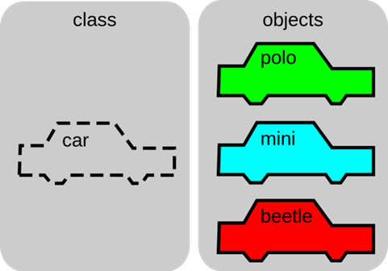
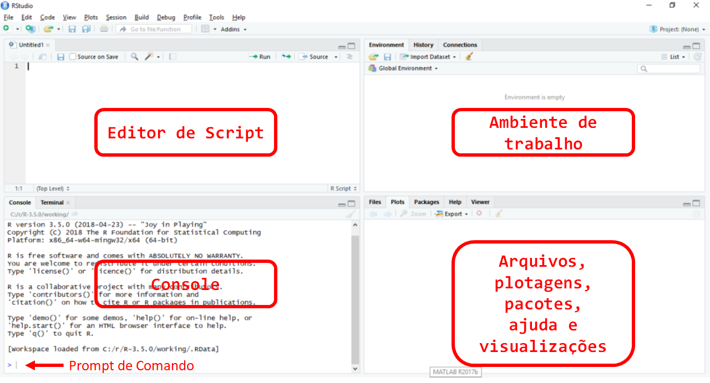

14 Introdução ao R
O foi criado por Ross Ihaka e Robert Gentleman no departamento de Estatística da Universidade de Auckland, Nova Zelândia, mas foi posteriormente desenvolvido por um esforço colaborativo de pessoas em vários locais do mundo.
É uma linguagem e um ambiente de desenvolvimento integrado para cálculos estatísticos, gráficos e análises diversas.
É gratuito e de livre distribuição.
É altamente expansível com o uso de pacotes, que são bibliotecas para funções específicas ou áreas de estudo específicas.
Curva de aprendizagem bastante amigável.
Enorme quantidade de tutoriais disponíveis.
14.2 Principais tipos de Objetos:
- vetores
- listas
- matrizes
- dataframes
- arrays
- funções

- Funções são também são objetos, mas executam um conjunto operações determinadas.
14.3 Classe
- Todo objeto tem uma classe.

Classe define as propriedades dos objetos.
As classes básicas são:
numeric
- integer, double
character
- string
logical
- TRUE, FALSE
factor
variáveis categóricas
nº limitado de valores
níveis do fator
{kind=link}
- Outras classes podem ser definidas.
14.4 Linguagem R
Tudo após
#não é lido pelo R. Este é um caractere de comentário.O diferencia maiúsculas de minúsculas.
Há uma série de operadores pré-programados.
14.5 Console
O console do refere-se ao ambiente de desenvolvimento e o prompt de comando (command prompt) é a linha de inserção de comando. O símbolo no prompt de comando é o “
>”, porém ele também muda para “+” quando há a entrada de um comando incompleto. Com o sinal de +, o console indica que aguarda a completude do comando inserido.Tudo após o símbolo “#” não é lido pelo R. Esse é o caráter para introdução de notas e comentários.
14.6 Criando objetos
Para atribuir um valor a um objeto, utilize o operador <- (ou =):
x <- 4
x## [1] 4y = 5
x + y## [1] 914.7 Funções
14.7.1 Sintaxe da função
função()
função(argumento1 = valor, argumento2 = valor, ...)
Vamos criar uma função como exemplo:
função <- function(arg1 = "", arg2 = ""){
Código_da_função
}Vamos observar os argumentos da função com a função args()
args(função) # Mostra os argumentos da função `função`## function (arg1 = "", arg2 = "")
## NULL14.7.2 Funções básicas
Versão, licença e citação:
R.Version() # mostra a versão## $platform
## [1] "x86_64-w64-mingw32"
##
## $arch
## [1] "x86_64"
##
## $os
## [1] "mingw32"
##
## $system
## [1] "x86_64, mingw32"
##
## $status
## [1] ""
##
## $major
## [1] "4"
##
## $minor
## [1] "0.2"
##
## $year
## [1] "2020"
##
## $month
## [1] "06"
##
## $day
## [1] "22"
##
## $`svn rev`
## [1] "78730"
##
## $language
## [1] "R"
##
## $version.string
## [1] "R version 4.0.2 (2020-06-22)"
##
## $nickname
## [1] "Taking Off Again"license() # informações sobre a licença##
## This software is distributed under the terms of the GNU General
## Public License, either Version 2, June 1991 or Version 3, June 2007.
## The terms of version 2 of the license are in a file called COPYING
## which you should have received with
## this software and which can be displayed by RShowDoc("COPYING").
## Version 3 of the license can be displayed by RShowDoc("GPL-3").
##
## Copies of both versions 2 and 3 of the license can be found
## at https://www.R-project.org/Licenses/.
##
## A small number of files (the API header files listed in
## R_DOC_DIR/COPYRIGHTS) are distributed under the
## LESSER GNU GENERAL PUBLIC LICENSE, version 2.1 or later.
## This can be displayed by RShowDoc("LGPL-2.1"),
## or obtained at the URI given.
## Version 3 of the license can be displayed by RShowDoc("LGPL-3").
##
## 'Share and Enjoy.'citation() # como citar##
## To cite R in publications use:
##
## R Core Team (2020). R: A language and environment for statistical
## computing. R Foundation for Statistical Computing, Vienna, Austria.
## URL https://www.R-project.org/.
##
## A BibTeX entry for LaTeX users is
##
## @Manual{,
## title = {R: A Language and Environment for Statistical Computing},
## author = {{R Core Team}},
## organization = {R Foundation for Statistical Computing},
## address = {Vienna, Austria},
## year = {2020},
## url = {https://www.R-project.org/},
## }
##
## We have invested a lot of time and effort in creating R, please cite it
## when using it for data analysis. See also 'citation("pkgname")' for
## citing R packages.Funções de ajuda:
help() # função ajuda## starting httpd help server ... donehelp.start() # Manuais e outros materiais## If nothing happens, you should open
## 'http://127.0.0.1:29636/doc/html/index.html' yourselfhelp(base) # Manual do pacote "base"Funções de data e hora:
Sys.time() # Obtém data e horário exatos do sistema## [1] "2022-10-20 20:39:36 -03"14.9 Prática
14.9.1 Indexação de objetos
x <- 4 # cria o objeto "x" atribuindo o valor "4"
x # Observe o objeto criado## [1] 4Para concatenar vários valores utilize a função c:
Concatenar vários valores e atribuí-los a um objeto:
x <- c(4, 5, 6, 7, 8)
x # Observe o objeto criado## [1] 4 5 6 7 8Extrair um ou vários valores de um objeto a partir da indexação:
x[3]## [1] 6x[c(1, 4)]## [1] 4 7Substitua valores de um objeto a partir da indexação:
y <- c(24, 10, 45, 56, 20, 29, 50, 67, 80, 23, 20, 15, 65, 57, 34, 63, 20)
y[y==20] <- 10 # Se algum valor de y é igual a 20, substituir por 10
y## [1] 24 10 45 56 10 29 50 67 80 23 10 15 65 57 34 63 10y[y==10] <- "NA" # Apaga todos os valores iguais a 10, substituindo por "NA"
y## [1] "24" "NA" "45" "56" "NA" "29" "50" "67" "80" "23" "NA" "15" "65" "57" "34"
## [16] "63" "NA"Deleta o objeto:
rm(x)Pode-se criar objetos com valores numéricos (numeric), conforme mostrado até aqui, mas também objetos com valores de caracteres (character), lógicos (logical) ou fatores (factor).
Objetos do tipo character podem ser criados utilizando aspas (” “) entre os valores incluídos. Um objeto do tipo factor cria categorias para cada valor encontrado no objeto. Geralmente são usados em diversos pacotes para análises filogenéticas:
character <-c("apical", "apical", "basal", "apical", "apical", "basal", "median")
character## [1] "apical" "apical" "basal" "apical" "apical" "basal" "median"charact_fact <- factor(character)
charact_fact## [1] apical apical basal apical apical basal median
## Levels: apical basal median14.9.2 Operadores de lógica
| < | | less than | |
|---|---|
| <= | | less than or equal to | |
| > | | greater than | |
|---|---|
| >= | | greater than or equal to | |
| == | | exactly equal to | |
|---|---|
| != | | not equal to | |
| !x | | not x | |
|---|---|
| x | | y | x OR y | |
Vamos testar:
x <- c(1:10)
x## [1] 1 2 3 4 5 6 7 8 9 10x[(x>8) | (x<5)]## [1] 1 2 3 4 9 10# Qual a lógica?
x > 8## [1] FALSE FALSE FALSE FALSE FALSE FALSE FALSE FALSE TRUE TRUEx < 5## [1] TRUE TRUE TRUE TRUE FALSE FALSE FALSE FALSE FALSE FALSEx > 8 | x < 5## [1] TRUE TRUE TRUE TRUE FALSE FALSE FALSE FALSE TRUE TRUEx[c(T, T, T, T, F, F, F, F, T, T)]## [1] 1 2 3 4 9 10Experimente a utilização dos operadores matemáticos simples entre diferentes objetos:
x## [1] 1 2 3 4 5 6 7 8 9 10y## [1] "24" "NA" "45" "56" "NA" "29" "50" "67" "80" "23" "NA" "15" "65" "57" "34"
## [16] "63" "NA"14.9.3 Inspecionando os atributos um objeto
object.size(x) # Tamanho do objeto## 96 bytesstr(x) # Estrutura do objeto## int [1:10] 1 2 3 4 5 6 7 8 9 10length(x) # Comprimento## [1] 10attributes(x) # Nomes, classes, etc## NULLclass(x) # Tipo do objeto## [1] "integer"mode(x) # Modo usado pelo R para armazenar objeto na memória## [1] "numeric"typeof(x) # Tipo usado pelo R para armazenar objeto na memória## [1] "integer"Inspecione os objetos criados. Exemplos:
class(x)## [1] "integer"class(y)## [1] "character"class(character)## [1] "character"class(charact_fact)## [1] "factor"14.9.4 Teste e Coerção de objetos
Com os métodos da função is é possível testar se um objeto corresponde a uma determinada classe. E com os métodos da função as é possível coagir um objeto de uma classe a transformar-se em outra.
Veja os métodos das funções is e as: (Retire o operador # da frente do comando para rodá-lo)
methods(is)## Warning in .S3methods(generic.function, class, envir): function 'is' appears not
## to be S3 generic; found functions that look like S3 methods## [1] is.array is.atomic is.BibEntry
## [4] is.call is.character is.complex
## [7] is.data.frame is.double is.element
## [10] is.empty.model is.environment is.expression
## [13] is.factor is.finite is.function
## [16] is.grouped_df is.infinite is.integer
## [19] is.language is.leaf is.list
## [22] is.loaded is.logical is.matrix
## [25] is.mts is.na is.na.data.frame
## [28] is.na.numeric_version is.na.POSIXlt is.na<-
## [31] is.na<-.default is.na<-.factor is.na<-.numeric_version
## [34] is.name is.nan is.null
## [37] is.numeric is.numeric.Date is.numeric.difftime
## [40] is.numeric.POSIXt is.numeric_version is.object
## [43] is.ordered is.package_version is.pairlist
## [46] is.primitive is.qr is.R
## [49] is.raster is.raw is.recursive
## [52] is.relistable is.single is.src
## [55] is.stepfun is.symbol is.table
## [58] is.tbl is.ts is.tskernel
## [61] is.unsorted is.vector
## see '?methods' for accessing help and source code# methods(as)Teste com os objetos já criados:
14.10 RStudio
O RStudio é um Ambiente Interativo de Desenvolvimento (IDE) que traz o console R, um editor de script, a exibição dos objetos e funções do ambiente de trabalho, área de plotagem, entre outras funcionalidades e automatizações, dentre as quais:
Identação automática
Complementação de parênteses
Editor com destaque de sintaxe
Auto-completar comandos

14.11 Ambiente de Trabalho
O ambiente de trabalho (workspace) é o espaço virtual onde os objetos definidos pelo usuário (vetores, matrizes, dataframes, listas, funções) são alocados.
No RStudio, podemos observar o ambiente de trabalho e seus objetos na aba
Ènvironment.
14.12 Diretório de Trabalho
O diretório de trabalho (working directory) define o diretório-raiz do caminho de diretórios para fins de entrada e saída de arquivos. Ele define o caminho relativo para um caminho de diretórios.
O caminho absoluto tem início na pasta raiz do seu disco local do computador. O caminho absoluto do ambiente de trabalho (workspace) pode ser obtido com a função
getwd(). Abaixo vemos o diretório-raiz do presente bookdown no computador local:
getwd()## [1] "C:/git repositories/Introducao_a_Filoinformatica"
ls() # lista todos os objetos/funções do Ambiente de Trabalho## [1] "charact_fact" "character" "edges" "edges.is_a"
## [5] "função" "graph" "graph2" "group"
## [9] "group.length" "group.n" "i" "nodes"
## [13] "nodes.id" "nodes.label" "nodes.label.this" "nodes.title"
## [17] "nodes.title.this" "PO" "referencias" "x"
## [21] "y"rm(list = ls()) # limpa todo Ambiente de Trabalho
ls() # lista todos os objetos/funções do Ambiente de Trabalho## character(0)